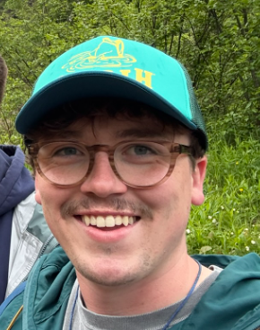

Kolbe M. Bauer

Rose Creek, MN
kolbebauer54@gmail.com | 507.440.2426
Professional Summary
Motivated and detail-oriented Computer Science student
with a strong foundation in software development and systems operations.
Currently employed as an IV Technician at Mayo Clinic
with prior experience in healthcare operations and customer service. Skilled
in multiple
programming languages and committed to delivering quality service in
both technical and clinical environments.
Professional Experience
Mayo Clinic - Rochester, MN
IV Technician | June 2023 - Present
- Deliver direct patient care in inpatient and outpatient hospital settings.
- Administer IVs in a fast-paced environment; respond to emergent needs while on-call.
- Collaborate with multidisciplinary teams to ensure high standards of care.
The Thirsty Belgian - Rochester, MN
Bartender & Server | April 2024 - December 2024
- Provided efficient, friendly service in a fast-paced dining environment.
- Maintained cleanliness and organization of the bar and dining areas.
- Built rapport with customers to enhance overall guest experience.
Mayo Clinic - Rochester, MN
Desk Operations Specialist, Radiology (MRI Department) | August 2021 - June 2023
- Checked in over 100 patients daily and supported MRI technologists with various administrative and clinical tasks.
- Ensured a smooth workflow within the department by managing patient inquiries and facilitating timely service delivery.
- Provided empathetic support to patients and families during imaging appointments.
Education
Associate of Science in Computer Science
Rochester Community and Technical College - Rochester, MN
Graduated: Spring 2025 | GPA: 4.00
Bachelor of Science in Computer Science
Winona State University - Rochester, MN
Expected Graduation: Summer 2026 | GPA: 4.00
Honors & Scholarships
- WSU Transfer Honor Scholarship - Winona State University
- Workforce Development Scholarship - Rochester Community and Technical College
- President's List (2023-2024) - RCTC
- Douglas Family Scholarship - RCTC
Technical & Professional Skills
Programming Languages & Technologies
- HTML, CSS, JavaScript, Java, Python, SQL
Tools & Platforms
- Microsoft Office Suite
- macOS & Windows operating systems
Soft Skills
- Strong customer service and communication skills
- Adaptable in fast-paced, high-pressure environments
- Team-oriented with attention to detail